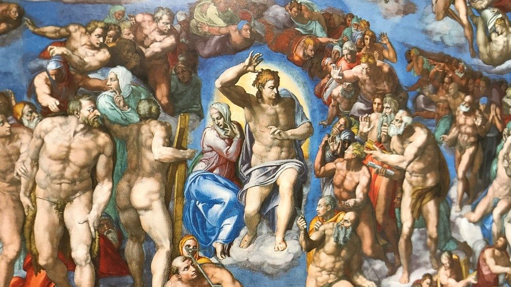
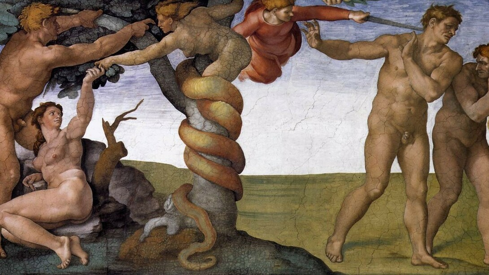
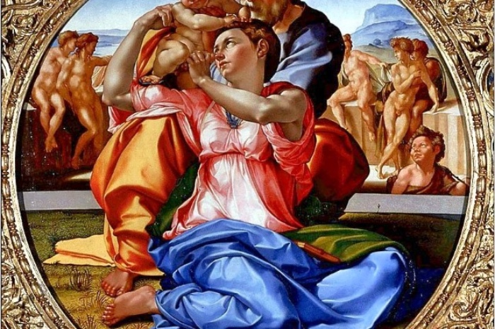
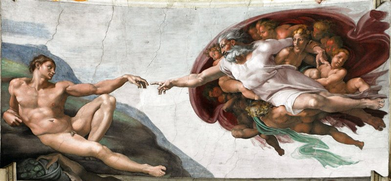
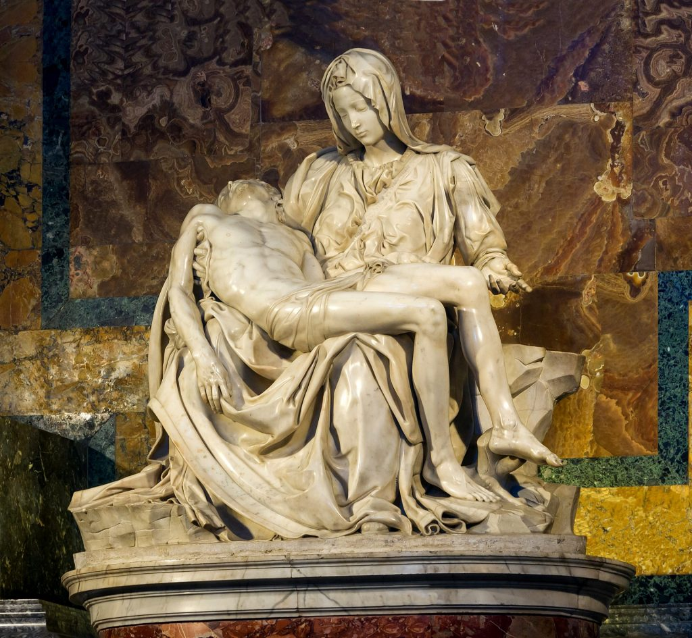
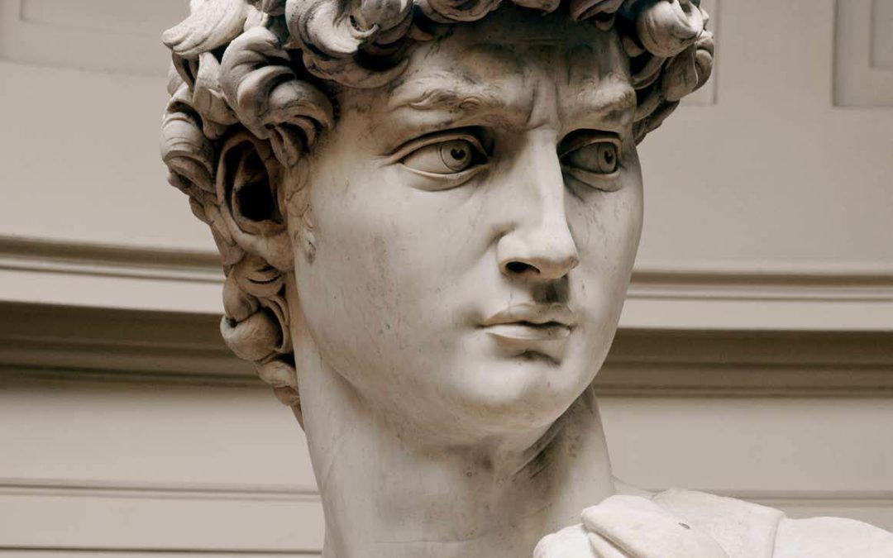

Michelangelo Buonarroti
Michelangelo Buonarroti, noto semplicemente come Michelangelo (Caprese, 6 marzo 1475[1] – Roma, 18 febbraio 1564), è stato un pittore, scultore, architetto e poeta italiano. Daniele da Volterra, Ritratto di Michelangelo Autoritratto (?) come Nicodemo, Pietà Bandini Michelangelo, disegno di Daniele da Volterra Soprannominato il Divin Artista,[senza fonte] fu protagonista del Rinascimento italiano, già in vita fu riconosciuto dai suoi contemporanei come uno dei più grandi artisti di tutti i tempi[2]. Personalità tanto geniale quanto irrequieta, il suo nome è legato ad alcune delle più maestose opere dell'arte occidentale, fra cui si annoverano il David, il Mosè, la Pietà del Vaticano, la Cupola di San Pietro e il ciclo di affreschi nella Cappella Sistina, tutti considerati traguardi eccezionali dell'ingegno creativo. Lo studio delle sue opere segnò le generazioni artistiche successive dando un forte impulso alla corrente del manierismo.
     